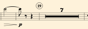
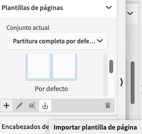

Plantillas de páginas 2ª Parte
Una vez creada tu plantilla con el número de instrumentos y la configuración de la partitura general, copia la música suficiente para crear tu plantilla ideal para las partes.
Con la parte de alguno de los instrumentos, ajusta los márgenes de página y vuelve a realizar los todos los pasos hasta crear tu parte por defecto. En un futuro podrás añadir los formatos predefinidos a cualquier archivo, ya que puedes exportar e importar tus propias plantillas de páginas
Establecer en el diseño de la partitura general la ubicación del Título, Compositor/a, dedicatoria, nombre de las partes/inteérpretes, copyright, etc.
Crea tu estilo propio de párrafos
Puedes crear estilos de párrafo o reutilizar aquellos que te interesen para configurar un aspecto personalizado en tus partituras.
Puedes utilizarlos a través de los Tokens en tus plantillas personalizadas.

Compases y números de ensayo
Utiliza opciones personalizadas para los números de compases, tanto para partes como para la partitura general. ⇧⌘L
Escoger el tipo de marcas de ensayo y buscar la opción que más se adapte a tus partituras. ⇧⌘E

Exporta/Importa conjuntos de plantillas de página
Guarda tus plantillas creadas para tener siempre el mismo diseño en partitura general y partes.
Exportar tus diseños para reutilizarlos.
Importa en nuevos documentos
.